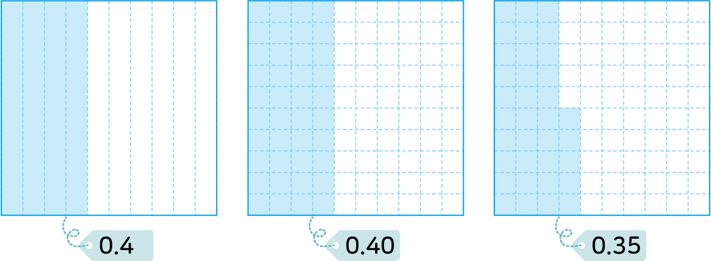

3. 소수의 덧셈과 뺄셈
소수의 크기를 비교해 볼까요
전개
수학
61
쪽
수학 익힘
44
쪽
0.4와 0.35의 크기를 비교해 봅시다.
모눈종이에 주어진 소수만큼 색칠해 보세요.

0.4와 0.40 중에서 어느 소수가 더 큰가요?
0.4와 0.35 중에서 어느 소수가 더 큰가요?
0.4와 0.40은 같은 수입니다.
필요한 경우 소수의 오른쪽 끝자리에
0을 붙여서 나타낼 수 있습니다.